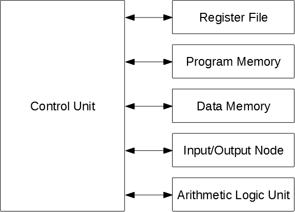
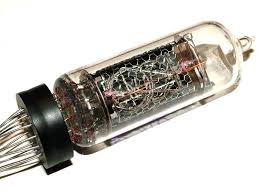
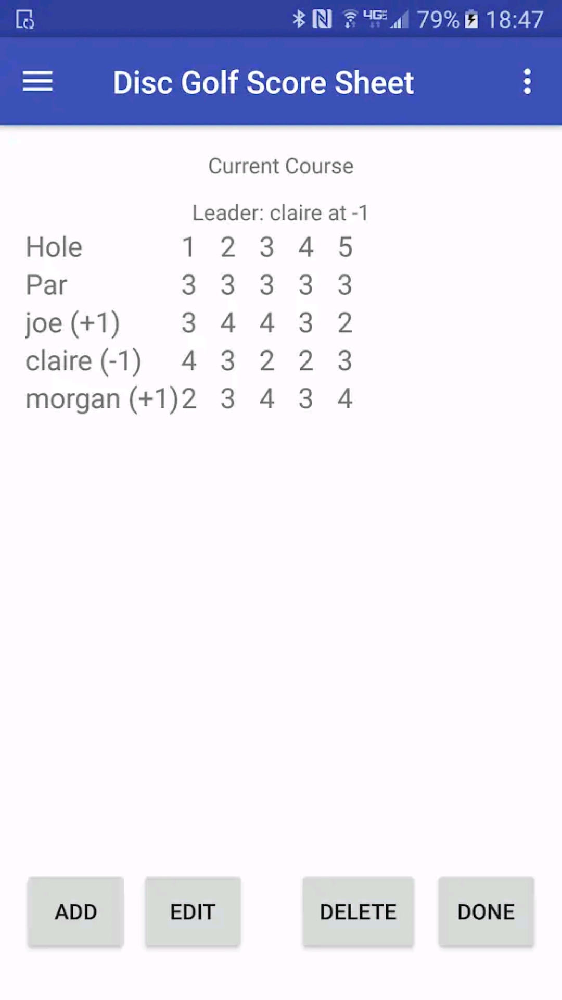

Tomasulo Lite Processor
This project involved the design, development, and test of a 16-bit soft processor. This processor, dubbed "Tomasulo Lite" after the original Tomasulo Algorithm, was written in VHDL, and utilizes a 5-stage pipeline, branch prediction, out-of-order execution, and in-order commits to speed-up execution time. To-date the best clocks-per-instruction (CPI) achieved is 1.6 - a marked improvement over a CPI of 5.0 for the equivalent, non-pipelined processor:
Nixi Tube Clock
This project was based around old, military-style filament bulbs that each contain the digits 0 through 9. The project uses an Arduino Nano, ESP8266, and Cyclone IV FPGA. The Arduino pings a Network Time Protocol (NTP) server requesting an accurate time stamp, then re-packetizes and transmits this data to the FPGA. The FPGA unpacks the data, decodes it, and drives a total of (4 nixi tubes) * (10 digits per nixi tube) = 40 digits via high-power BJTs.
Disc Golf Scoring Application
This project was written for Android phones and based around Java and SQL. The app was basic in that there was no cloud functionality - all data was stored locally due to the small amount of it. The app allowed users to create disc golf courses (assume holes and pars), play each course with an arbitrary number of players, and either save or delete each game played. Once saved, users could view their best game for any given course, view the best player's game at any course, and so on.
CS50 Final Project
This project involved an almost full stack development of a website, utilizing HTML, CSS, Javascript, Python, and SQL. A comprehensive description can be seen in the associated YouTube video that I made. The site is a powerlifting oriented site, allowing the admin to create powerlifting events and allowing users to register for them. Users also had personalized home pages that showed their previous events and a graph displaying the results of each previous event.